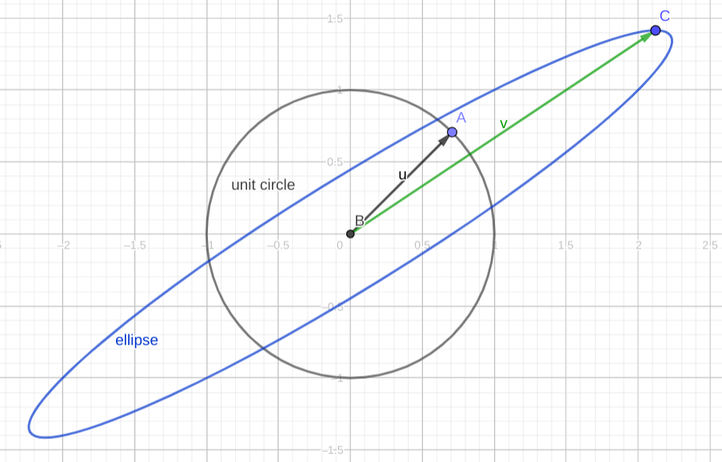
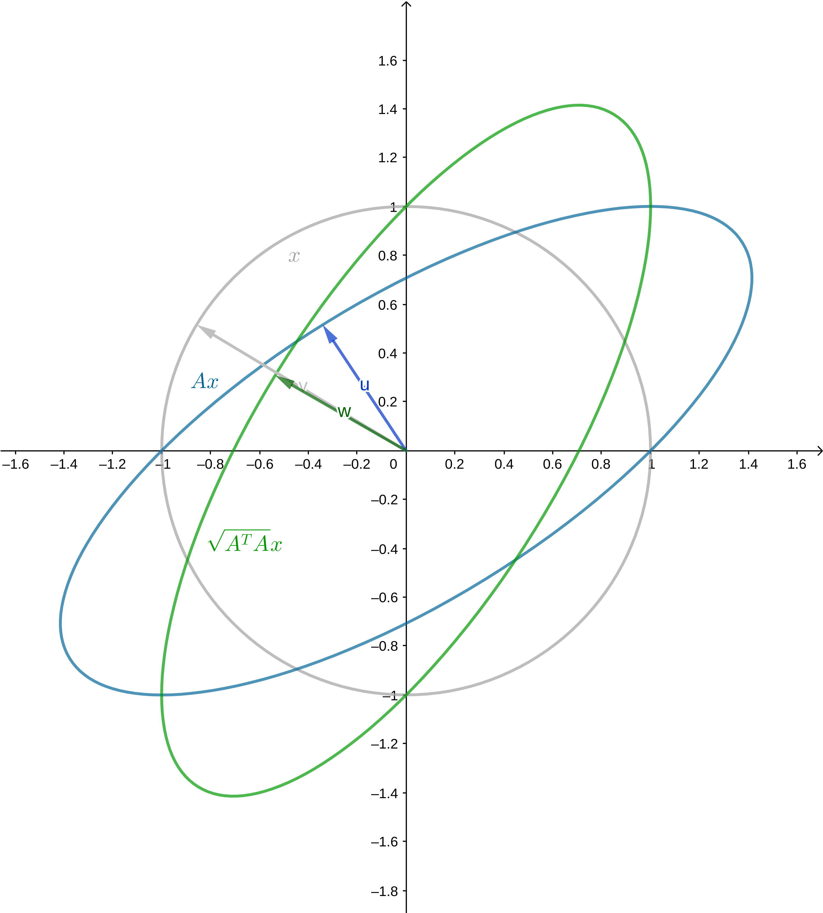

奇异值分解〔SVD，Singular Value
Decomposition〕在不少方面有应用，不过初看的话不太容易理解。本文整理了我对SVD的理解，难免存在不严谨的地方，不过希望可以帮助读者理解SVD。
了解一个方法的动机是很重要的。我觉得从优化问题入手，并且借助几何方法，比较容易理解SVD的动机。
餐前甜点：一个优化问题
现有m×n矩阵A，要找到一个m维向量x，使二者乘积的模最小，也就是求以下优化问题的解：
min ∣∣Ax∣∣s.t.∣∣x∣∣=1
如果用线性变换的方式表述问题，线性变换A∈L(V,W)，x∈V，求x使∣∣Ax∣∣最小。
问题的转化
可以注意到，最小化∣∣Ax∣∣其实就是最小化∣∣Ax∣∣2，稍一改写，其实就是
∣∣Ax∣∣2=∣∣(Ax)T(Ax)∣∣=∣∣xT(ATA)x∣∣
可以注意到ATA是个对称方阵（如果看作是算子，那么是个「自伴算子」），因为它的转置和自身相等。于是接下来重点放在ATA这个「性质良好」的矩阵上，将其记为M。
(ATA)T=AT(AT)T=ATA
任何对称方阵都对应一个二次型，而这里，我们最小化问题的目标函数正是M对应的二次型。
具体实例的可视化
在开始介绍SVD之前，可以先来观察几个实例。
比如说我们假定：
M=(2001)
在二维平面可视化这个矩阵对应的线性变换是很容易的，y方向上不动，x方向上拉伸到原先的两倍。我们限定了∣∣x∣∣=1，其实就是限定了在单位圆上找点。因此我们关心单位圆被这个线性变换映射成了什么图形。
答案是椭圆。如图，单位圆上的点被映射到椭圆上，如果说x的图像是单位圆，那么Mx的图像就是图中的椭圆，很显然，从图中可以看出，x=(0,±1)T的时候，映射后的向量模最小。
 第一个例子
第一个例子
本例比较简单，如果一定要计算才放心的话，高中数学的方法尚可解决。
上面那个实例中M是对角阵。如果M不是对角阵是什么情况？下面来看第二个实例。
假设有
M=(2111)
Mx的图像依旧是椭圆，下图中u被映射到v，方向发生了改变。经过M的映射，只有特征向量的方向不会发生改变，因为如果v是特征向量，则有Mv=λv。而恰恰就是特征向量的方向缩小或扩张得最厉害，可以对着下图验证一下。。

第二个例子
为什么还是椭圆？
这涉及到一个关键的事实：如果我们重新找一对标准正交基，那么M在新的基下可以写成一个对角矩阵，那么在新的基下（或者说，新的座标系下），Mx的方程可以写成标准椭圆方程。
为什么可以换座标系这样求解？可以注意到，旧的基显然是标准正交基，如果新的基也是标准正交基，那么在这两个基之间进行变换，其实相当于只是做了一下旋转+轴对称，没有改变向量的模长，因此在新的基下求解是可行的。想象一下，把上图的蓝色椭圆“摆正”之后再进行求解。
那么为什么可以找到让M对角化的标准正交基呢？因为M的几个特征向量恰恰是相互正交的！读者可以就本例的M验证一下。这涉及到谱定理，稍后将证明。
读者不妨考虑一下如果对称矩阵M不满秩的情况（或者说线性变换把高维空间压缩到低维空间是怎样的情况），映射的结果其实是一个退化的椭圆。
到这里，我们大致有解决问题的思路了：找到映射后的椭圆，然后把它摆正，然后容易知道横向和纵向总是“拉伸”或者“压缩”最显著的方向，据此可以求解。这种思想可以推广到高维。
谱定理
上面的注解提到了谱定理。谱定理保证了M在某个标准正交基下是对角矩阵，也就是可以正交对角化。
因此作为SVD的准备，需要先证明谱定理〔the spectral theorem〕。
我们可以从两个不同的角度表述谱定理。
本文中谱定理特指「实谱定理」，简单说就是针对实数构成的矩阵／实向量空间。
表述
可以这样表述谱定理。
n×n的矩阵A
- A有n个实特征值（算上重数）
- A的特征向量正交
- A可以被正交对角化
也可以这样表述谱定理：
T∈L(V)，那么以下条件等价：
T是自伴的
V有一个由T的本征向量组成的规范正交基
T有关于V的某个规范正交基有对角矩阵
概念准备
定理的表述出现了一些国内教学中不常出现的概念，需要先对这些概念及其性质作出解释。
算子：T∈L(V,V)，也就是从V映射到V的线性变换，则T称为V上的算子，记为T∈L(V)
伴随〔adjoint〕：给定T∈L(V,W)（也就是从向量空间V到向量空间W的线性映射），如果有T∗∈(W,V)，取v∈V，w∈W，使
⟨Tv,w⟩=⟨v,T∗w⟩
那么T∗称为T的伴随。
可以证明一定存在这样的伴随，具体参考LADR。这里只举LADR中的一个例子，通过这个例子可以感受一下为什么伴随一定存在。
T(x1,x2,x3)=(x2+x3,2x1)
⟨(x1,x2,x3),T∗(y1,y2)⟩====⟨T(x1,x2,x3),>(y1,y2)⟩⟨(x2+3x3,2x1,(y1,y2)⟩x2y1+3x3y1+2x1y2⟨(x1,x2,x3),(2y2,y1,3y1)⟩
所以T∗(y1,y2)=(2y2,y1,3y1)
伴随相当于矩阵转置。对于实线性变换，其伴随对应的矩阵，就是它本身的矩阵的转置。在此不证明。另外，容易证明算子和其伴随有相同的本征向量。
自伴〔self-adjoint〕：和自己的伴随相等，称为自伴。自伴相当于矩阵对称。
谱定理的简单证明
这部分证明可能不严谨，和LADR书上的不同。
如果实线性变换T∈(V)有dimV个线性无关的本征值，那么谱定理的证明很容易。
在这个条件下，我们来证明自伴算子对于某个标准正交基有对角矩阵。
取T的特征向量为基，那么在这个基下，T对应的矩阵是个对角矩阵。如果我们对这个基做一下格拉姆-施密特正交化〔Gram-Schmidt
Method〕，得到基的就是正交的，而且T对应新的基的矩阵就是个上三角矩阵。
如果对此不理解，随便找个基，亲手算算，自然就懂了。比如说有一组基v1,v2,…,vn，n=dimV。T关于这组基有的矩阵是对角矩阵，就是说Tvk=λkvk。正交化之后得到u1,u2,…,un。
u1u2u3=v1=v2−(v2⋅u1)u1=v3−(v3⋅u2)u2−(v3⋅u1)u1⋯
因此T对应u1,u2,…,un这组基的矩阵
⎝⎛λ100⋮−v2⋅u1λ20−v3⋅u1−v3⋅u2λ3⋯⋯⋯⎠⎞
是个上三角矩阵。
而对于自伴算子，这个上三角矩阵就是对角矩阵。
考虑算子T，其对应的矩阵为M，那么T∗对应的矩阵是MT（算子伴随相当于矩阵转置）。根据上面的结果，如果取基适当，可以把M化为上三角矩阵，对应地，MT就是下三角矩阵。
如果T自伴，那么T=T∗，那么有M=MT。上三角矩阵和下三角矩阵相等，当且仅当对角线以外的部分全部为0。因此M是对角矩阵。
也就是说，我们找到了一组基，使得T对应的矩阵是对角矩阵。对这组基做一下标准化，就得到一组标准正交基，归一化不改变向量的方向，T关于这组标准正交基的矩阵依然是对角矩阵。即任取一个wk=∣∣uk∣∣uk，有Twk=μwk。
根据本征向量的定义，这组标准正交基中的每个向量都是T的本征向量。
最后一步很容易证明：如果一个线性变换关于某个标准正交基有对角矩阵，则它是自伴矩阵。
至此，我们证明了添加额外条件后的谱定理。
实谱定理的完整证明
要证明完整的实谱定理，关键在于去掉T有n个本征向量这一假设。但我觉得没有必要把完整的实谱定理的证明放上来，毕竟我们的目标是SVD。对证明感兴趣，可以参阅LADR。
如果要沿着上面的证明证下去，首先得证明T作为自伴算子，一定有本征值。接下来，得证明T即使没有dimV个本征向量，也能够找到一个标准正交基。基本思想就是将T限制到更低维的空间U，使他在里面满足上面“青春版”的谱定理，然后不断补充和这些U的基正交的向量。
主菜：奇异值分解
有了谱定理，接下来的证明会轻松很多。我们可以先把椭圆“摆正”，然后再进行求解。
等距同构和正交矩阵
算子S∈L(V)是等距同构，当且仅当它保范数，即∣∣Sv∣∣=∣∣v∣∣
其实就是说，算子对应的矩阵是正交矩阵。这点容易证明。
∣∣Sv∣∣2=∣∣Sv⋅Sv∣∣=∣∣vTSTSv∣∣=∣∣v∣∣2=∣∣v⋅v∣∣=∣∣vTv∣∣
所以STS=I，即S是正交矩阵。
正算子和半正定矩阵
正算子：T∈L(V)，且T自伴，对任意v∈V，⟨Tv,v⟩≥0，那么是T是正算子。
半正定矩阵：对任意二次型x，xTAx≥0，那么A是半正定矩阵。
正算子的矩阵就是半正定矩阵。
定义正算子T的平方根R，为满足R2=T的算子。
可以证明，T和R的所有本征值非负，前者的本征值是后者对应本征值的平方。据此可以继续证明，正算子的平方根是唯一的，而且是自伴的。
之后把R记为T
极分解
设T∈L(V)。那么T∗T是正算子。换一种说法，就是说任取矩阵A，AA是半正定的对称矩阵。证明不难，我们已经证明了T∗T是自伴的，接下来只要证明它满足正算子的定义。
⟨T∗T,v⟩=⟨Tv,Tv⟩=∣∣Tv∣∣2≥0
然后终于可以引入极分解了！
设T∈L(V)，那么存在S∈L(V)，使T=ST∗T
为什么可以这样分解？推导如下：
∣∣Tv∣∣2=⟨Tv,Tv⟩=⟨T∗Tv,v⟩=⟨T∗TT∗Tv,v⟩=⟨T∗Tv,T∗Tv⟩=∣∣T∗Tv∣∣2
所以有∣∣Tv∣∣=∣∣T∗Tv∣∣。定义S1为满足以下条件的算子
S1Tv=T∗Tv
可以证明S1可以扩张为一个等距同构，在此不表，细节参阅LADR。
极分解告诉我们，如果一个矩阵没法对角化，没关系，我们把它“旋转”一下可以变成一个对称矩阵，就肯定可以对角化了。旋转不影响范数，也就是保持向量长度不改变，刚好符合我们的要求。
奇异值分解
奇异值：T∗T的本征值
终于可以引入奇异值分解了。注意到，根据谱定理，T∗T是可以正交对角化的，求它的本征值即可。也就是说，有正交矩阵V
T∗T=VΣVT
再使用极分解，就得到了方阵的奇异值分解。下面S、V、U都是正交矩阵。
T=ST∗T=SVΣVT=UΣVT
可以把这个结论推广到方阵以外的矩阵，在需要的地方补0即可。
求奇异值不一定要对算子开平方，因为T和T本身有相同的特征向量，前者对应的特征值是后者特征值开平方。
U的列向量称为左奇异向量，V的列向量称为右奇异向量。
餐后消食片：回到优化问题
谱定理告诉我们，映射之后是椭圆、可以把椭圆摆正求解。
而摆正之后，横向和纵向就是拉伸、压缩最显著的地方，拉伸和压缩的倍数就是特征值。奇异值的意义，就是这些倍数。
奇异值分解把这一切串了起来。
现在还差一步没有证明，为什么“横向和纵向就是拉伸、压缩最显著的地方”，在前面我们是通过几何直觉判断出来的，这不利于推广到高维。现在来证明。
所谓横向和纵向，其实就是基的方向。A如果有本征值，记最大的为M，最小的为m。
那么∣∣Ax∣∣=∑1nλkxi≥m∑1nxi。并且这个最小值是可以取到的，当x=(x1,x2,⋯,xn)T是m对应的特征向量的时候，取得这个最小值。最大值同理可得。
至此我们已经知道如何求解优化问题，找到x，使
min ∣∣Ax∣∣s.t.∣∣x∣∣=1
方法就是，对A做奇异值分解得到A=UΣV（即求出ATA的特征值，然后逐一开平方），取出最小的特征值，找到它在U中对应的奇异向量即为我们想求的。
最后再提供一个具体例子。设上面优化问题的$ A$是
A=(1011)
A是不能对角化的，但是ATA可以。
Lambda, P = np.linalg.eig(np.array([[1, 1], [1, 2]]))
得到
P = array([[-0.85065081, -0.52573111],
[ 0.52573111, -0.85065081]])
Lambda = array([0.38196601, 2.61803399])
所以ATA=PΛPT，就是
np.matmul(P, np.matmul(np.diag(np.sqrt(Lambda)), P.T))
得到
array([[0.89442719, 0.4472136 ],
[0.4472136 , 1.34164079]])
可以把它的图像画出来，如下图，访问这里可以进行交互。可以看到只是做了个旋转罢了，这就是极分解做的事情。

最后一个例子
顺便可以通过可交互的图验证一下SVD的结果和画出来的图是否相合。
U, Sigma, VT = np.linalg.svd(np.array([[1, 1], [0,1]]))
U = array([[ 0.85065081, -0.52573111],
[ 0.52573111, 0.85065081]])
Sigma = array([1.61803399, 0.61803399])
VT = array([[ 0.52573111, 0.85065081],
[-0.85065081, 0.52573111]])